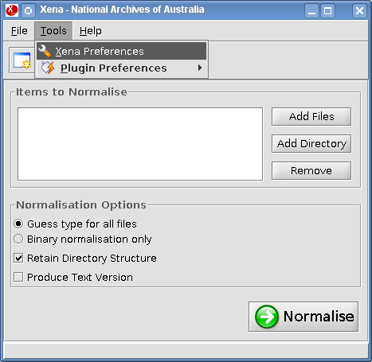

Setting preferences
The following procedure describes how to configure the:
- Xena destination directory - where Xena output files are saved
- Xena log file - where the Xena log file is stored.
- From the Menu Bar, select Tools - Xena Preferences:

Result: The Xena Preferences window is displayed.

- In the Xena destination directory field:
- Click the Browse button to open a file browser.
- Navigate to where you want to save Xena output files.
- Click Open.
- In the Xena log file field:
- Click the Browse button to open a file browser.
- Navigate to the location where you want to save the Xena log file.
- Click Open.